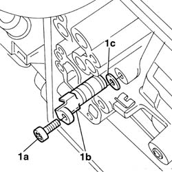
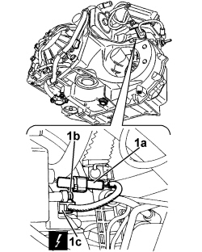

2135B74 ELECTRONIC AUTOMATIC TRANSMISSION OUTPUT RPM SENSOR - R R
- Path
- Procedures > 21 GEARBOX UNIT > 2135 AUTOMATIC TRANSMISSION EXTERNAL CONTROLS > 2135B AUTOMATIC TRANSMISSION ELECTRICAL CONTROLS > 2135B74 ELECTRONIC AUTOMATIC TRANSMISSION OUTPUT RPM SENSOR - R R
- Kind
- repair procedure (removal / refitting; the operation number is the code)
- Applies to
- engines: 2.0 16v, 3.0 24V V6, 2.0 16V JTD; all production periods
- Interactive page
- https://sloeber94.github.io/elrnDB-fUlss/en/#/179007262
Applies to: engines: 3.0 24V V6; all production periods
 Removing
Removing
 Refitting
Refitting- Position the vehicle on the lift.
- Disconnect the negative battery terminal.
 | Description | Connector |
|---|---|---|
. | Battery |
Op. 5010B18 HEATING VENTILATION UNIT AIR INTAKE - R+R
Op. 1048A47 SLEEVE FROM RIGID PIPE TO THROTTLE BODY - R R
See descriptions
Op. 7055B54 UNDER ENGINE PROTECTION/GUARD - R.R.
Op. 2130A40 COOLANT SUPPLY PIPE TO AUTOMATIC TRANSMISSION FLUID HEAT EXCHANGER - R.R.
Op. 2130B36 AUTOMATIC TRANMISSION VALVE COVER R R
Op. 2130B40 GEAR SELECTION SOLENOID UNIT - R R
1. Undo the fixing bolt (1a), remove the automatic transmission output rpm sensor (1b) and keep the spacer (1c).

Applies to: engines: 3.0 24V V6; all production periods
Refitting
Removing- Position the automatic transmission output rpm sensor fitting the spacer and tighten the fixing bolt to the recommended torque.
 | Value - daNm | Fastening | Component | Ø |
|---|---|---|---|---|
. | 1 | Bolt | AUTOMATIC GEARBOX OUTPUT RPM SENSOR - R.R. |
Op. 2130B40 GEAR SELECTION SOLENOID UNIT - R R
Op. 2130B36 AUTOMATIC TRANMISSION VALVE COVER R R
Op. 2130A40 COOLANT SUPPLY PIPE TO AUTOMATIC TRANSMISSION FLUID HEAT EXCHANGER - R.R.
Op. 7055B54 UNDER ENGINE PROTECTION/GUARD - R.R.
See descriptions
Op. 1048A47 SLEEVE FROM RIGID PIPE TO THROTTLE BODY - R R
Op. 5010B18 HEATING VENTILATION UNIT AIR INTAKE - R+R
- Connect the negative battery terminal.
| Description | Connector |
|---|---|---|
. | Battery |
Op. 0010T45 AUTOMATIC TRANSMISSION FLUID CHECK LEVEL AND TOP UP IF NECESSARY
Op. 0010T21 ENGINE COOLANT - CHECK DENSITY AND CHANGE, IF NECESSARY
- Remove the vehicle from the lift.
Applies to: engines: 2.0 16v, 2.0 16V JTD; all production periods
Removing
Refitting- Turn the ignition key to the OFF position.
- Disconnect the negative battery terminal.
Description | Connector |
|---|---|
Battery | A001 |
Op. 4450B02 LEFT FRONT WHEEL - R.R
Op. 7055B90 LEFT FRONT WHEEL ARCH LINER - R.R.
1. Release the wiring from the mountings, disconnect the electrical connection (1a), undo the fixing bolt (1b) and remove the gearbox input speed sensor (1c).
Description | Connector | |
|---|---|---|
1b | Gearbox input speed sensor | K078 |

Applies to: engines: 2.0 16v, 2.0 16V JTD; all production periods
Refitting
RemovingPosition the gearbox input speed sensor in its seat.
Description | Connector |
|---|---|
Gearbox output speed sensor | K077 |
Tighten the fixing bolt to the recommended torque.
Value daNm | Fastening | Component | dia |
|---|---|---|---|
1,0 | Bolt | Gearbox input speed sensor fastening |
Connect the electrical connection and attach the wiring to the mountings
Op. 7055B90 LEFT FRONT WHEEL ARCH LINER - R.R.
Op. 4450B02 LEFT FRONT WHEEL - R.R
- Connect the negative battery terminal.
Description | Connector |
|---|---|
Battery | A001 |
Topics linked from this page (10)
- 0010T21 ENGINE COOLANT - CHECK DENSITY AND CHANGE, IF NECESSARY
- 0010T45 AUTOMATIC TRANSMISSION FLUID CHECK LEVEL AND TOP UP IF NECESSARY
- 1048A47 SLEEVE FROM RIGID PIPE TO THROTTLE BODY - R R
- 2130A40 COOLANT SUPPLY PIPE TO AUTOMATIC TRANSMISSION FLUID HEAT EXCHANGER - R.R.
- 2130B36 AUTOMATIC TRANMISSION VALVE COVER R R
- 2130B40 GEAR SELECTION SOLENOID UNIT - R R
- 4450B02 LEFT FRONT WHEEL R R
- 5010B18 CLIMATE CONTROL UNIT AIR INTAKE - R.R.
- 7055B54 UNDER-ENGINE GUARD - R R
- 7055B90 LEFT FRONT WHEEL ARCH LINER - R.R.